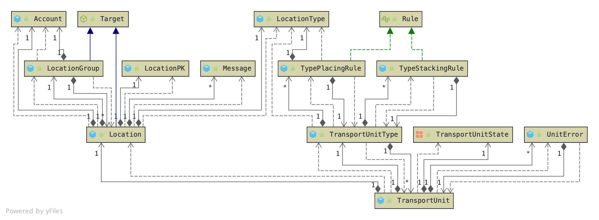
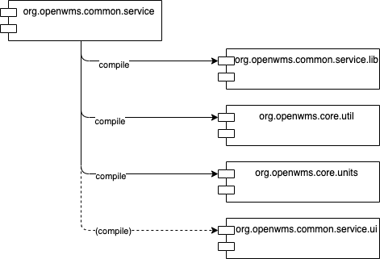

Purpose
This service provides essential functionality to deal with Locations, LocationGroups and TransportUnits. An often referred example is
the ability to move a TransportUnit from a Location A to a Location B.



Build
The module depends on OpenWMS.org CORE dependencies and one additional optional COMMON dependency that is only used in the enterprise version and offers an additional API for the UI.

Build a runnable fat jar with the execution of all unit and in-memory database integration tests, but without a required RabbitMQ server to run:
$ ./mvnw package
To also build and run with RabbitMQ support call:
$ ./mvnw package -DsurefireArgs=-Dspring.profiles.active=ASYNCHRONOUS,TEST
This requires a RabbitMQ server running locally with default settings.
Run
Run On Command Line
After the binary has been built it can be started from command line. By default no other infrastructure services are required to run this service.
$ java -jar target/openwms-common-service-exec.jar
In a distributed environment the service configuration is fetched from the central OpenWMS.org Configuration Service.
This behavior can be enabled by activating the Spring Profile DISTRIBUTED. Additionally it makes sense to enable asynchronous
communication that requires a running RabbitMQ instance - just add another profile ASYNCHRONOUS. If the latter
is not applied all asynchronous AMQP endpoints are disabled and the service does not send any events nor does it receive application events
from remote services. The AMQP protocol with the RabbitMQ is currently the only supported message broker. But
switching to others, like HiveMQ (MQTT) or Apacha Kafka, is not rocket science.
$ java -jar target/openwms-common-service-exec.jar --spring.profiles.active=DISTRIBUTED,ASYNCHRONOUS
With these profiles applied the OpenWMS.org Configuration Service is tried to be discovered at service startup. The service fails to start if no instance of the configuration service is available after a configured amount of retries.
Run as Docker Container
Instead of building the software from the sources and run it as Java program on the JVM it can also be fetched as a Docker image from Docker Hub and started as a Docker container.
$ docker run openwms/org.openwms.common.service:latest
Release
Releasing a new stable version of the software to Maven Central is usually done by the service maintainers only. To build an optimized and signed binary version and upload it to the Sonatype Staging Repository call:
$ ./mvnw deploy -Prelease,gpg
After it is uploaded, Sonatype runs a couple of quality checks before it can be manually released to Maven Central.
Release Documentation
To release the API documentation as a static website manually just call the following two Maven commands. This is integrated into the automated build pipeline as well.
$ ./mvnw package -DsurefireArgs=-Dspring.profiles.active=ASYNCHRONOUS,TEST
$ ./mvnw site scm-publish:publish-scm